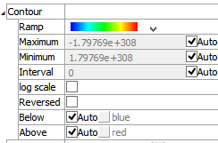

等值线
等值线

指定等值线绘制的设置。
等值线：用于控制等值线绘制选项的设置容器。
色带：设置用于渲染的颜色色带。五个选项按选择框中的显示顺序依次为：彩虹（蓝到红）、灰度、蓝-白-红、蓝-青-白-黄-红、绿-白-红。
最大值：自动（勾选 自动）或使用指定值（取消勾选 自动）设置颜色色带的最高值（右端）。高于 最大值 的值将用 高于 颜色填充。
最小值：自动（勾选 自动）或使用指定值（取消勾选 自动）设置颜色色带的最低值（左端）。低于 最小值 的值将用 低于 颜色填充。
间隔数：指定渲染时使用的颜色间隔数量；如果勾选 自动，此值默认为 8-16 之间的某个数字。
对数刻度：勾选后指定颜色间隔按对数间隔分布。
反转：勾选时反转颜色色带的颜色顺序。
低于：指定用于低于 最小值 的值的颜色。勾选 自动 时使用颜色色带的左端颜色。取消勾选时，由色板控件指定颜色。
高于：指定用于高于 最大值 的值的颜色。勾选 自动 时使用颜色色带的右端颜色。取消勾选时，由色板控件指定颜色。
| 这些内容对您有帮助吗？… | FLAC3D © 2019, Itasca | 原文更新于 2020 年 10 月 8 日 |